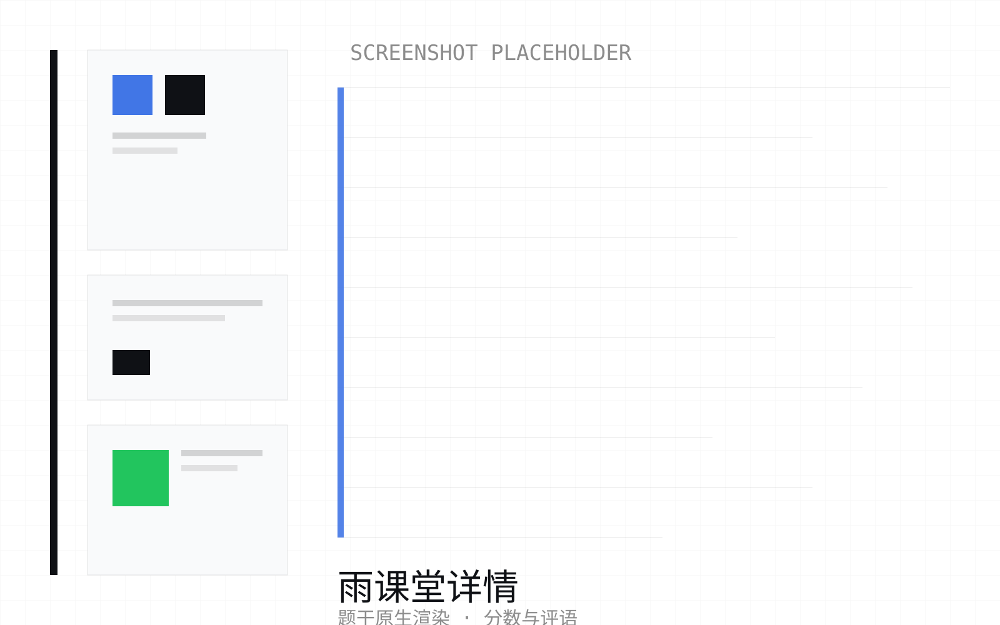
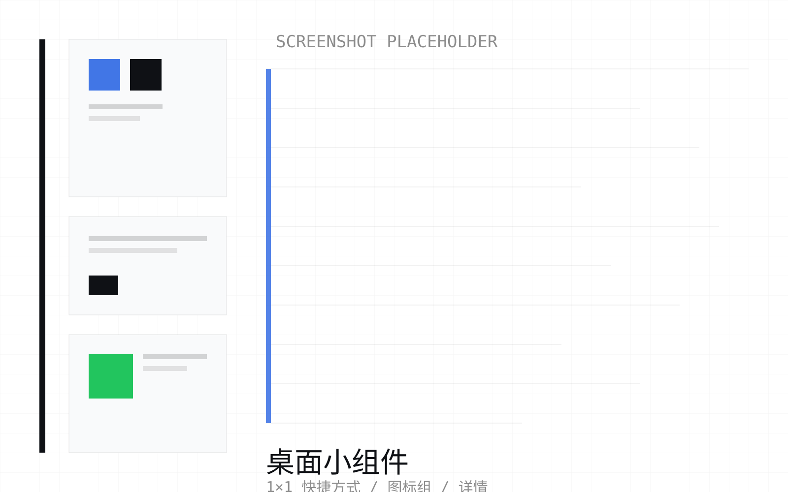
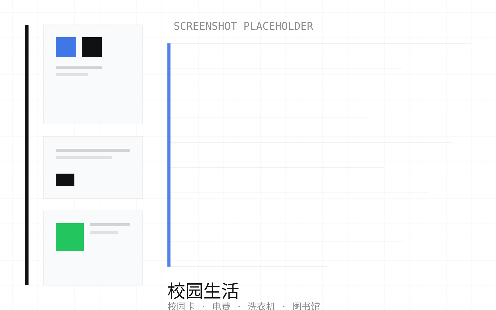
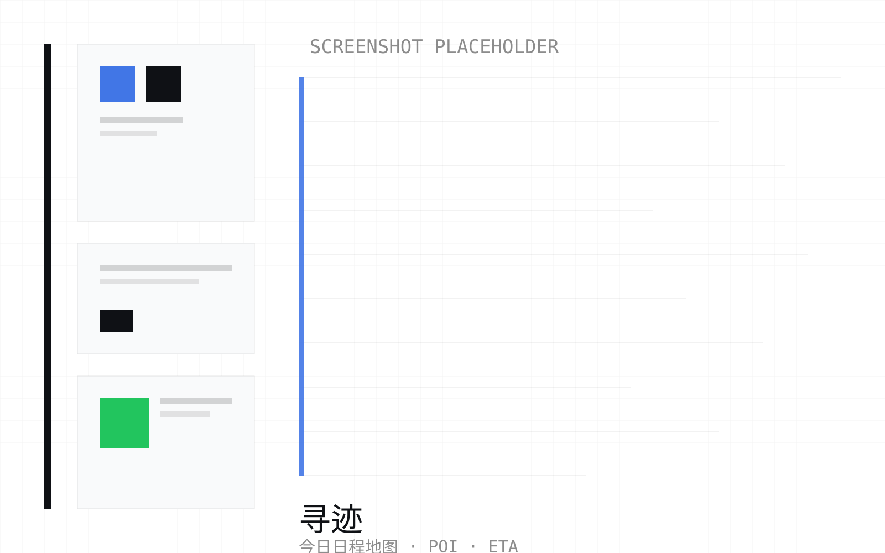

One App · One Identity · One Campus —— 统一身份、统一数据层、统一界面的清华校园套件。
清华的服务散在十几个系统里，各自登录、各自界面、各自过期。OneTHU 把它们收成一套：一个身份、一份数据、一套界面，三端同构。
登录一次，全网通行；会话失效自动恢复，不让你在“已掉登录”的状态里白点。
所有页面读同一份数据、用同一套设计令牌；同一个实体在任何页面都是同一个原子。
OneTHU Harness：一句话查课表、成绩、电费、订座位——校园助手就在左下角。
只读校方公开接口，状态判定不做乐观猜测；查不到就说查不到，不谎报“已提交”。
macOS / Windows / Android 功能对齐：通知、小组件、下载位置都在三端可用。
十二组能力，从登录到插件、从手机通知到桌面小组件。每条都对应应用内的真实入口，不是规划。
登录一次，全校通行：网络学堂、信息门户、图书馆、校园卡共用同一次登录，二次验证支持。会话失效自动重漫游，弱网与前台挂起后可自愈。
课程、作业、通知、文件、讨论区一屏管完；作业 DDL 与提交状态真实查询，不做“已提交”的乐观猜测。
雨课堂、TUOJ（AI 版 / 经典版）、Tyche、DSA OJ 四个系统的作业统一进「全部作业」与「今日」，一处看全。
课表、云日历、自定义日程（含重复规则）合成时间轴；提醒落到系统通知，不是应用内弹窗。
一块小组件显示什么**按块绑定**：日程与 DDL、某个原子占满看详情、收藏夹图标组、1×1 快捷方式各占一块。
页面、组件、实体（课程 / 作业 / 文件 / 通知 / 新闻 / 洗衣机 / 教室 / 场馆 / 图书馆）统一成“原子”：可搜、可收藏、可深链、可上桌面。
校园卡流水、宿舍电费、校园网、电子发票、银行代发、研究生收入；洗衣机接三家数据源。
图书馆座位、研讨间、空教室、公共空间与体育场馆余量一处查。
课件、附件、云盘文件都能预览（Office / PDF / 图片 / 压缩包树），并决定存到哪儿。
三种形态：JS 插件、Rust sidecar、Android 内嵌；能力覆盖命令、功能页、弹窗、剪贴板、原子、桌面小组件、系统通知。
内置 Rust 骨干插件：左下角常驻对话面板，一句话查课表、成绩、电费、订座位。
一套设计令牌贯穿三端与站点；文档覆盖插件开发、API 参考、架构与外部作业源。
下方为界面截图位（当前是几何占位图，替换时保持 1600×1000 即可对齐）。




与应用内“插件 → 市场”同一份名单（OneTHU-Market 的 registry.json，人工审查收录）。星数实时取自 GitHub，点卡片进仓库。
所有安装包都在 GitHub Releases；下面按平台直连，或点“最新版”页面自行选择。
装好之后：用清华统一认证账号登录（支持二次验证）；也可以先在登录页进入演示模式看界面；数据异常时点右下角刷新。
主程序、市场、Harness 与官方示例插件；下方同时列出被本项目借鉴与移植的上游项目。